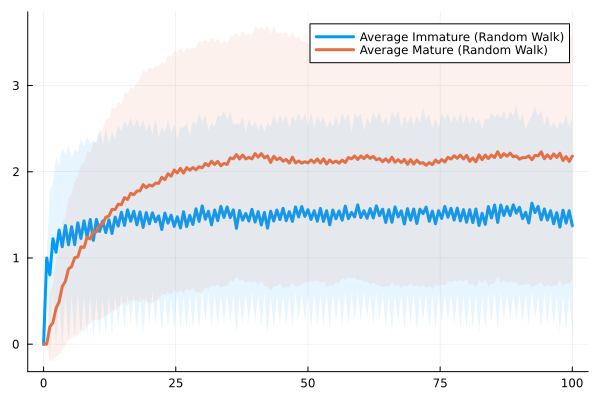

This work uses random walks to model the development and dynamics of synaptic maturation.

Questions arise from experimental data: why do dendritic spine imaging data suggest that synaptic development undergoes pruning and reduction after early development, while other PSD95 imaging data indicate that these synaptic proteins (which are key to synaptic strength and plasticity) do not decrease but actually plateau?
This work uses modelling to demonstrate how these data can be reconciled, and further build upon the dynamics of synaptic maturation to understand the development of network-level architectures in cortical circuits.